Chapitre II : Le traitement d'images, l'art du filtrage et de la transformation
Ce chapitre abordera les fondamentaux du traitement d'images numériques. Il introduira entre autres les filtres et transformées qui sont à la base des outils "d'apprentissage profond" (ou "Deep Learning" en anglais) utilisés en "vision par ordinateur".
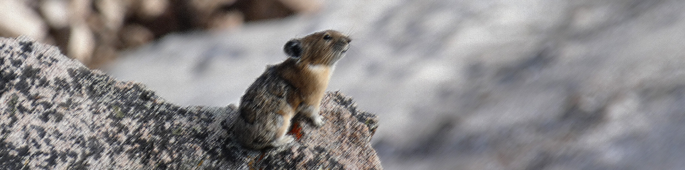
"Vibre la lumière, Chantez les couleurs, Il y met sa vie, Le bruit de son coeur.
Et comme un bateau, Porté par sa voile, Doucement le pinceau, Glisse sur la toile.
Et voilà l'homme, Qui croise avec ses yeux, Le temps d'un éclair, Le regard des dieux.
Cézanne peint, Il laisse s'accomplir le prodige de ses mains.
Cézanne peint, Et il éclaire le monde pour nos yeux qui n'voient rien."
Michel Berger & France Gall, Cézanne peint, 1985
Images exemples
Ce chapitre sera illustré par quelques images exemples.
Vous trouverez la première ici.

Il s'agit d'une photographie d'un Cynomys ludovicianus, aussi connu sous le nom de "Black-tailed Prairie Dog", prise en 2022 à Boulder (Colorado, USA).
Par défaut, nous utiliserons cette image pour illustrer les différentes méthodes de traitement d'images.
Dans les cas spécifiques où nous avons besoin d'une image contenant des contours ou des coins bien définis, nous utiliserons une seconde image que vous trouverez ici.

Il s'agit d'une photographie d'une mosaïque représentant une Lagidium peruanum, aussi connue sous le nom de "Vizcacha del Norte", prise en 2025 à Huancayo (Pérou).
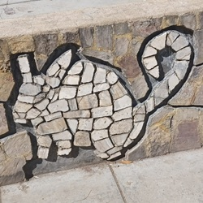
Et dans les cas spécifiques où nous avons besoin d'une image avec des lignes ou des cercles à détecter, nous utiliserons une troisième image que vous trouverez ici.

Il s'agit d'une photographie d'un Ochotona princeps, aussi connu sous le nom d' "American Pika", prise en 2022 au Rocky Mountain National Park (Colorado, USA).
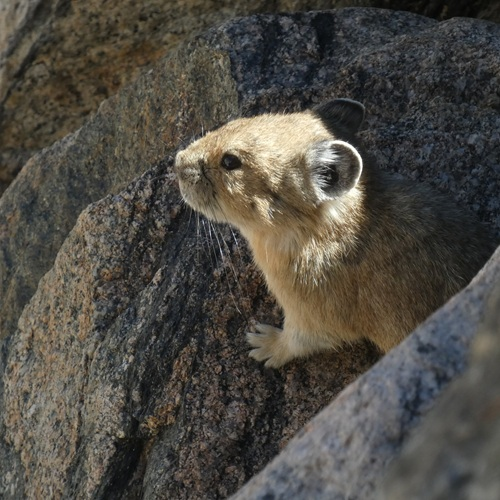
N'hésitez pas à aller regarder les détails de la prise de vue des différentes photographies dans les métadonnées des images !
Le traitement d'image
Transformations géométriques
Agrandissement / réduction
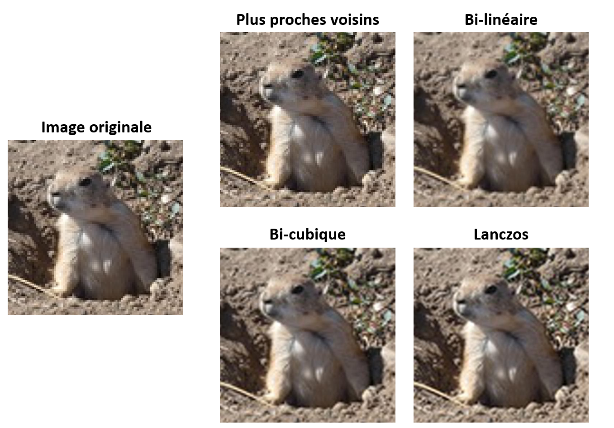
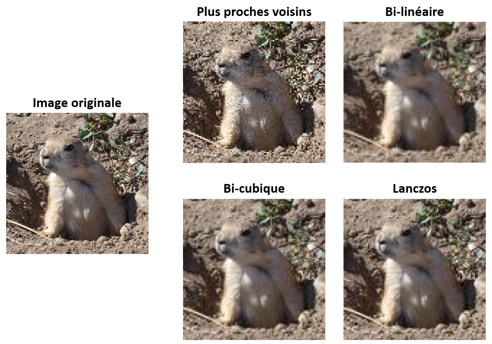
Rotation / translation
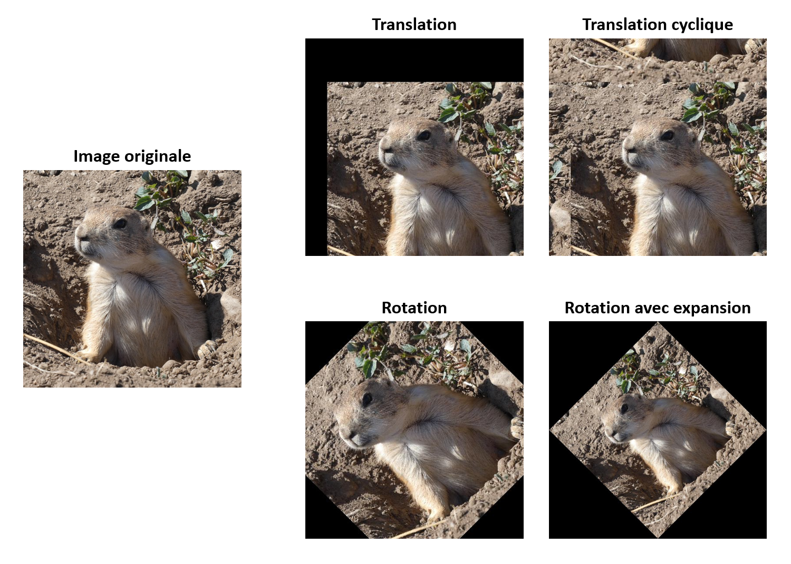
Filtrage linéaire
Convolution
Choix du kernel
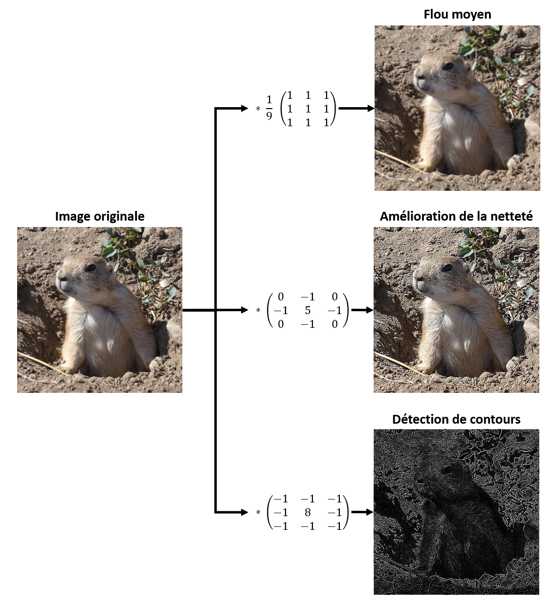
FFT et filtrage fréquentiel
Analyse spectrale d'une image
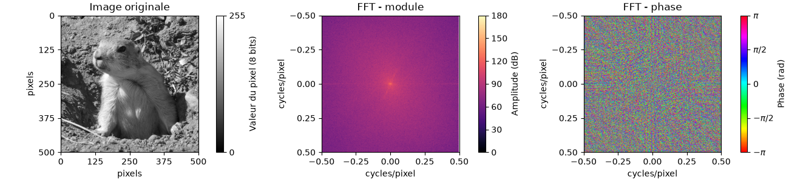
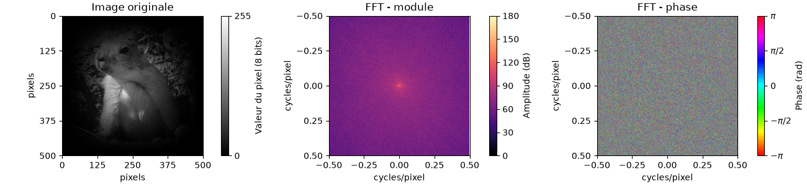
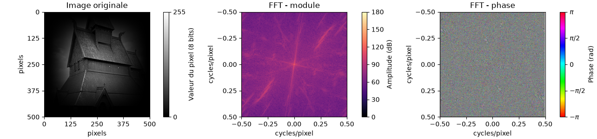
Filtrage en fréquences d'une image
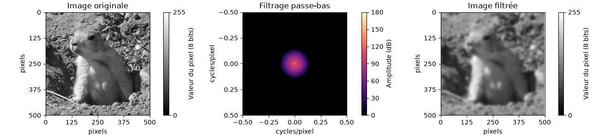
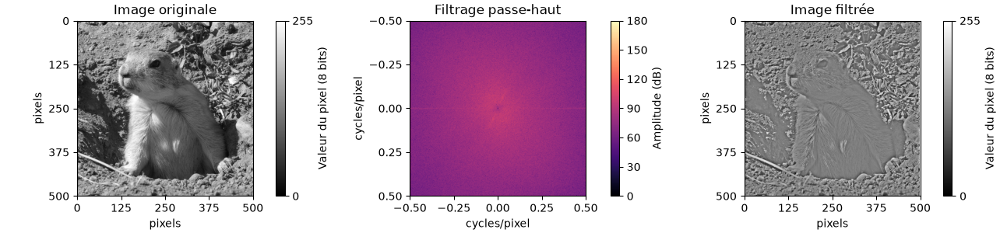
Opérations morphologiques
Element structurant
Filtre médian
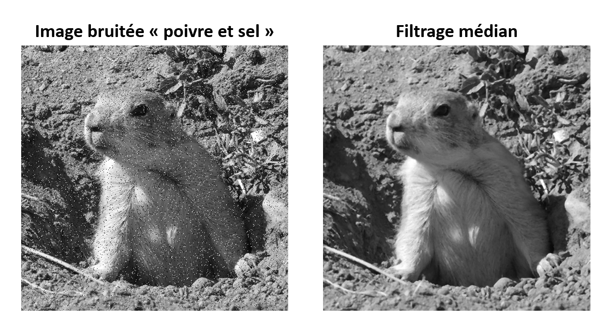
Erosion et dilatation
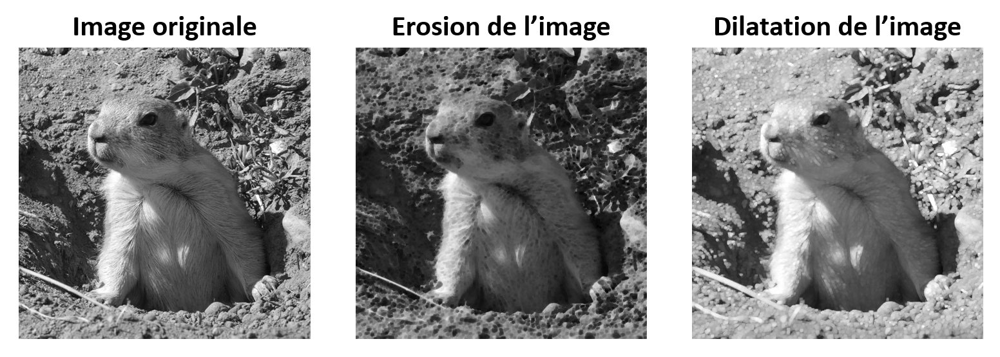
Ouverture et fermeture
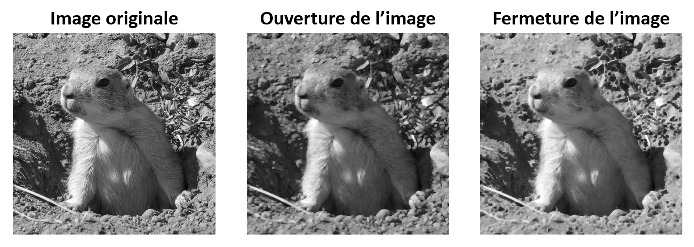
Détection de contours ou de coins
Filtre de Sobel
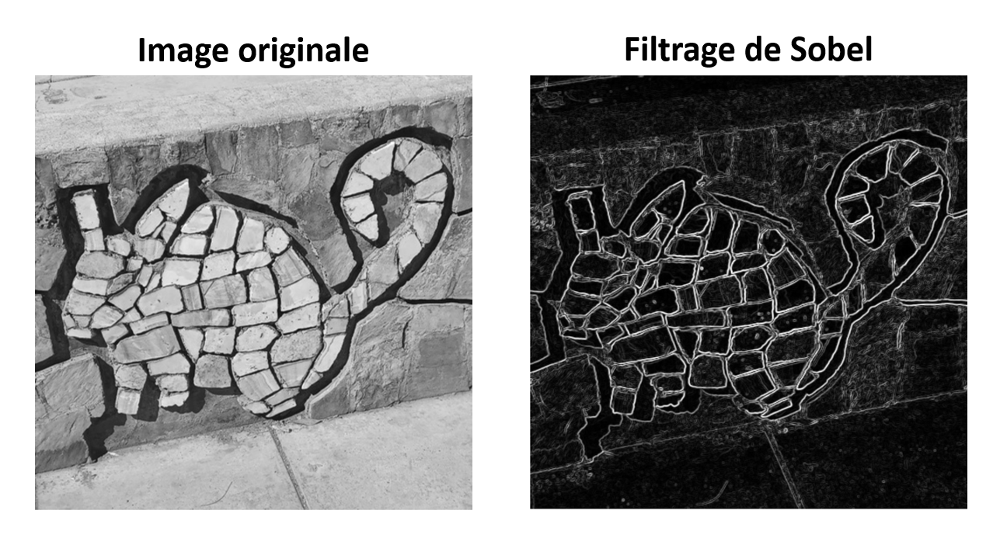
Filtre de Canny
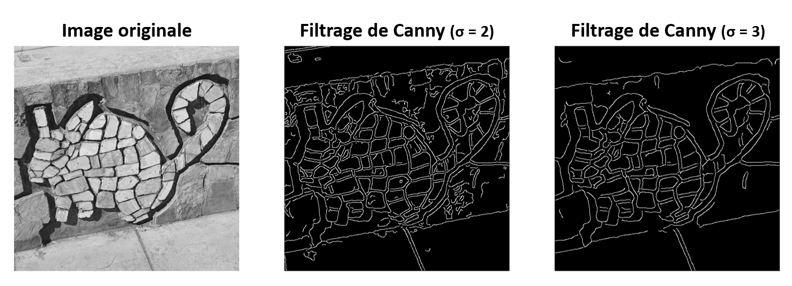
Filtre de Harris
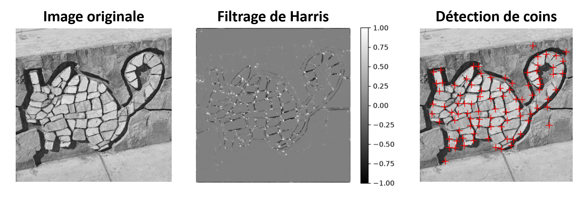
Détection de forme
La transformée de Hough
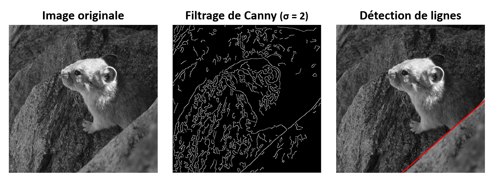
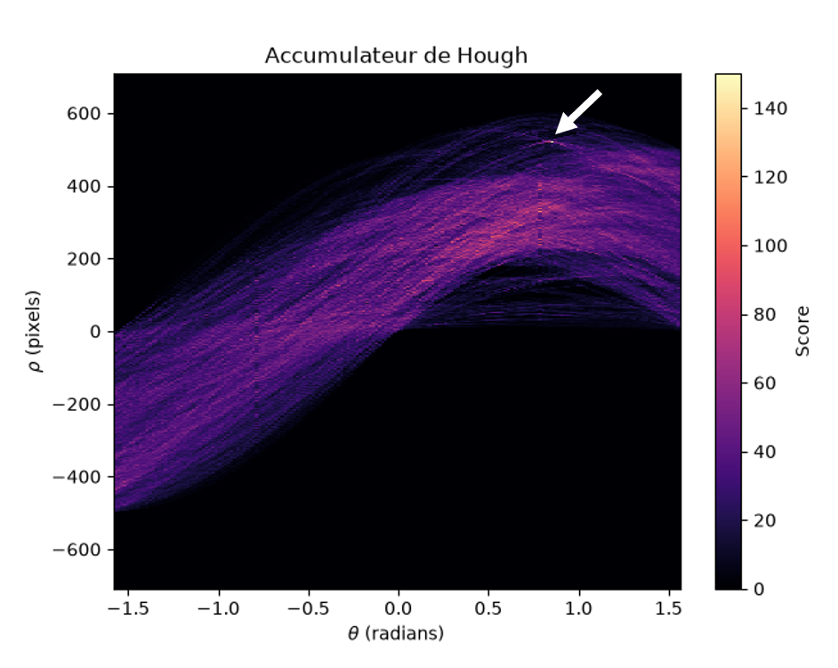
Adaptation aux cercles
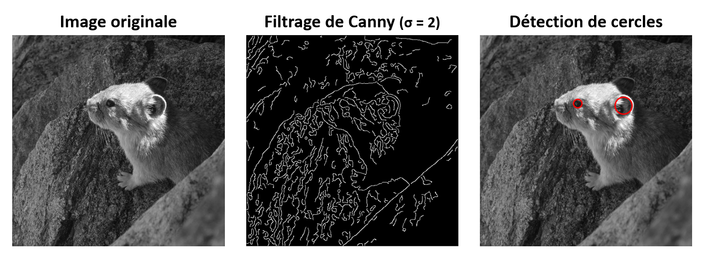
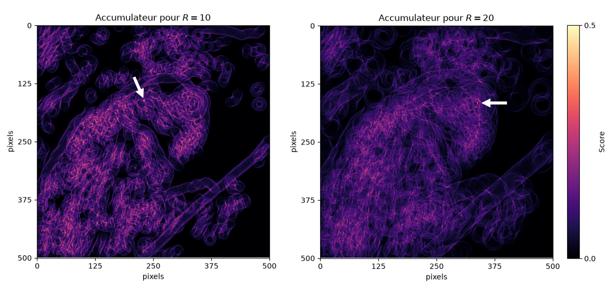